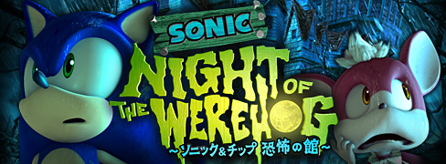
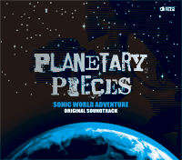
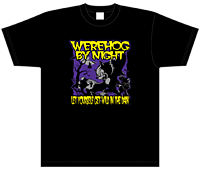
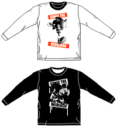

セガが2009年3月14日（土）及び15日（日）に開催するユーザー参加型イベント『やっぱ遊びな祭09』に『ソニック ワールドアドベンチャー』を出展致します。
| 名称 | 「やっぱ遊びな祭09」 |
|---|---|
| 日時 | 2009年3月14日（土）、15日（日） 10：00 ～ 17：00 |
| 会場 | 東京ファッションタウンビル（TFTホール） 東京都江東区有明3-1 TFTビル西館2F |
| 公式サイト | http://asobina.sega.jp/ |
株式会社セガは、2009年2月19日に発売を予定しておりますPLAYSTATION®3／Xbox360用ゲームソフト『ソニック ワールドアドベンチャー』の体験版を、それぞれPLAYSTATION®Store（※1）・Xbox LIVE（※2）にて、本日より無料配信を開始しました。
※1 PLAYSTATION®Storeは、株式会社ソニー・コンピュータエンタテインメントが運営するオンラインサービスです。こちらではPLAYSTATION®3やPSP®「プレイステーション・ポータブル」でお楽しみいただけるコンテンツを提供しています。PLAYSTATION®3版の体験版はPLAYSTATION®Storeにてダウンロード可能です。
※2 Xbox LIVEは、マイクロソフト株式会社が運営するオンラインサービスです。こちらではXbox 360でお楽しみいただけるコンテンツを提供しています。Xbox360版の体験版はXbox LIVEにてダウンロード可能です。本体験版の「Xbox LIVE ゴールド メンバーシップ」への配信開始は1月22日、「Xbox LIVE シルバー メンバーシップ」への配信開始は1月29日予定となります。
| 配信開始日 | 2009年1月22日配信予定 ※「Xbox LIVE シルバー メンバーシップ」へは1月29日配信予定 |
|---|---|
| 価格 | 無料 |
| 必要HDD容量 | PLAYSTATION®3：239MB／Xbox 360：188MB |
『ソニック ワールドアドベンチャー』が、12/20、12/21に幕張メッセで開催されるジャンプフェスタ2009セガブースに出展決定！
是非、この機会に体験しよう！
詳しい情報は「ジャンプフェスタ2009」公式サイトをご確認下さい。
『ソニック ワールドアドベンチャー』をモチーフにしたオリジナルショートムービー「NIGHT OF THE WEREHOG ～ソニック＆チップ 恐怖の館～」が、12月20日から3週間の期間限定で、全国9箇所のシネマコンプレックスにて劇場公開されることが決定しました。
これは株式会社セガと株式会社ティ・ジョイのコラボレーションにより実現したもので、劇場での本編上映前に「NIGHT OF THE WEREHOG ～ソニック＆チップ 恐怖の館～」が無料でご覧いただけるというものです。それに伴い、ソニックＴシャツプレゼントキャンペーンも実施されます。
詳しくは「NIGHT OF THE WEREHOG ～ソニック＆チップ 恐怖の館～」公式サイトへ！
予告ムービーも公開中！
公式サイトURL : http:/sonic.sega.jp/NightOfTheWerehog/
2008年11月7日に発売日延期をお伝えし、2009年春発売としておりました『ソニック ワールドアドベンチャー』のPLAYSTATION3版およびXbox360版ですが、「2009年2月19日」に発売することが決定いたしました。
ご迷惑をおかけしましたが、ここにお知らせいたします。
変更前の発売日：2009年春
変更後の発売日：2009年2月19日
※Wii版は2008年12月18日発売予定

2008年12月18日にWii版、2009年2月19日にPLAYSTATION3版・Xbox360版が発売予定のゲームソフト『ソニック ワールドアドベンチャー』のオリジナルサウンドトラック『プラネタリー･ピーシーズ』が、2009年1月28日に発売となります。
本アルバムは、東京フィルハーモニー交響楽団が演奏するオーケストラテーマ曲『The World Adventure』、2003年にはグラミー賞にノミネートされ、世界中のパンク・キッズから注目を集めるバンド「ボウリング・フォー・スープ」のジャレット・リディックを起用した疾走感溢れる主題歌『Endless Possibility』など、総勢100人を超えるミュージシャンが参加し、ロック・ジャズ・オーケストラ・テクノ・ワールドミュージックといったさまざまなジャンルの楽曲、計91曲を3枚のCDに完全収録した、豪華BOX入りデジパック仕様のアルバムとなっています。PLAYSTATION3版・Xbox360版のゲームソフト発売に先駆け、世界中を冒険するゲーム内容にふさわしい“ワールド感”あふれるサウンドをお楽しみください！
| 商品名 | SONIC WORLD ADVENTURE ORIGINAL SOUNDTRACK PLANETARY PIECES |
|---|---|
| 商品名カナ | ソニック ワールドアドベンチャー オリジナルサウンドトラック プラネタリー・ピーシーズ |
| 発売日 | 2009年1月28日発売 |
| 品番 | WWCE-31193～5 |
| 価格 | 4,200円（税込） |
| 発売元 | 株式会社ウェーブマスター |
| 販売元 | エイベックス・マーケティング株式会社 |
先日11月7日に当公式サイトにて、日本国内におきます『ソニック ワールドアドベンチャー』のPLAYSTATION3版およびXbox360版の発売日が延期される告知をさせて頂きましたが、その告知情報から、海外のソニックファンの皆様が欧米アジア版（『Sonic Unleashed』）と日本版（『ソニック ワールドアドベンチャー』）の間で品質の差が出てしまうのではないか？という誤解と不安を与えてしまいましたことをお詫び申し上げます。
販売戦略の違いや製造日程などの都合で各国における発売日の違いが生じておりますが、欧米アジア版と日本版の品質の差はございません。
各国とも万全の品質でご提供させて頂きますので、ご安心して欧米アジア版の発売を楽しみにお待ちください。
尚、日本版の正式な発売日は近日中に告知させて頂きますので日本のソニックファンの方も今しばらくお待ちくださいますようよろしくお願い致します。
『Sonic Unleashed』（『ソニック ワールドアドベンチャー』）はソニックチームとセガがお届けする渾身の自信作です。最高のソニック体験にもうすぐ出会えます！
世界中のソニックファンの皆様、発売を心待ちにしていてください！！
To Sonic fans living outside Japan,
In our previous November 7 post to this home page, we informed you that the release date of Sonic World Adventure in Japan on PS3 and 360 will be delayed. Based on that announcement, some fans living overseas have become concerned that there will be a difference in quality between the version of the game released in Japan and the version released outside of Japan. This is not the case and we apologize for this misunderstanding.
The difference in the international release dates is based on the sales strategy and the manufacturing schedule. There will be no quality difference between the North American/European/Asia release and the Japanese version. Please be assured we are doing our best to deliver a top quality experience to people all over the globe.
We still cannot announce the release date in Japan, but we should be able to do so shortly. Our apologies to Sonic fans in Japan, who we must ask to wait a while longer."
Sonic Team is proud to present you Sonic Unleashed (Sonic World Adventure). You will be able to experience the best Sonic ever in no time!
来る12月18日の3機種同時発売に向けて鋭意開発を進めておりました『ソニック ワールドアドベンチャー』ですが、ソフト内容の一層の充実とクオリティの更なる向上を目指すために、PLAYSTATION3版およびXbox360版については、現状の発売スケジュールでは万全でないと判断し、止む無く発売日を延期することを決定致しました。一旦予定を「2009年春発売」と変更し、発売日決定次第本公式サイトで告知させていただきます。
なお、Wii版につきましては、予定通り2008年12月18日発売予定で変更ございません。
この度は関係者の皆様、そして何よりも発売を楽しみにされていたユーザーの皆様に多大なるご迷惑をおかけしましたことをここに深くお詫び申し上げます。
PLAYSTATION3 / Xbox360 『ソニック ワールドアドベンチャー』
発売元：株式会社セガ
価格：7,140円(税込)
変更前の発売日：2008年12月18日
変更後の発売日：2009年春
※Wii版は2008年12月18日発売予定

セガ冬のキャンペーン実施！
応募すると抽選で2009名様にセガのオリジナルTシャツが当たります。
Tシャツラインナップの中には『ソニック ワールドアドベンチャー』のTシャツも！ アートディレクター川村幸子デザインのワイルドなTシャツです。
「夜はこんなにワイルドTシャツ」
衝撃！！ソニックにいったい何が！？『ソニック ワールドアドベンチャー』で目覚めたソニックのワイルドな夜の姿をちょっと思い切って表現！
※詳しい情報は「セガ2008～2009 冬のキャンペーン！」をご覧下さい。
※『ソニック ワールドアドベンチャー』については、キャンペーン対象となる商品はWii版のみです。
PLAYSTATION3版およびXbox360版はキャンペーン対象外となります。ご了承下さい。

『ソニック ワールドアドベンチャー』出展決定！
フィナーレライブにJohnny Gioeli & Jun Senoue as Crush 40出演決定！
東京ゲームショウ2008 セガ特設サイト
10/12（日）：フィナーレライブ
出演者：Johnny Gioeli & Jun Senoue as Crush 40、庄司英徳（ゲスト：MAKOTCH）
ソニックの歴史を音楽と共に振り返る！そして龍が如くシリーズの最新曲を披露！
◎コスパ：「『ソニック ワールドアドベンチャー』リバーシブルTシャツ」、
他「ソニック」グッズ、TGSで先行発売決定！
◎三英貿易：「ソニックぬいぐるみ」全5点販売！
◎コスパブース
・『ソニック ワールドアドベンチャー』ヘッジホッグ×ウェアホッグリバーシブルロングスリーブTシャツ
サイズ：S/M/L
\4,200(税込)
◎三英貿易ブース
・ソニックぬいぐるみ(M) \2,100(税込)
・ソニックぬいぐるみ(S) \1,029(税込)
・テイルスぬいぐるみ(S) \1,029(税込)
・ナックルズぬいぐるみ(S) \1,029(税込)
・エミーぬいぐるみ(S) \1,029(税込)